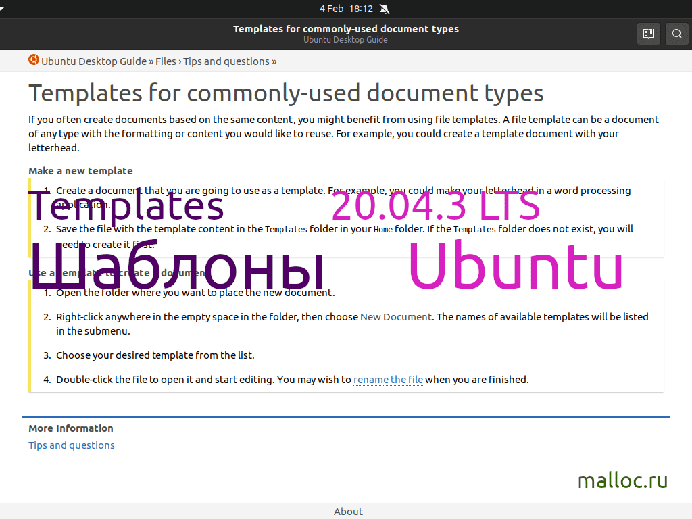

Шаблоны файлов на Ubuntu
Начну с того, что поговорю о слове Шаблон( англ. - Template).
Я понимаю это слово так - "Некая форма, которая помогает сделать результат таким же, как до этого". Например всевозможные эталоны, трафареты, нитка, кусок дерева, повторяющиеся код и т.д.
Мы создадим файлы, которые можно будет использовать повторно. А воспользоваться ими можно через правую кнопку мыши и выбрать нужный шаблон.
Шаблоны позволяют быстро создать нужные файлы. То есть не нужно будет писать одно и тоже из раза в раз, например файл main, make.
Данная статья предназначена для ознакомительных и практических целей, поэтому подайдет для начинающих и спецов.
Все действия протестированы и проверены на дистрибутиве Ubuntu.
В статье есть видео, в которым вcё показано на практике.
Там рассказываю о своих шаблонах и как их использую.
Приятного чтения и просмотра!
Я понимаю это слово так - "Некая форма, которая помогает сделать результат таким же, как до этого". Например всевозможные эталоны, трафареты, нитка, кусок дерева, повторяющиеся код и т.д.
Мы создадим файлы, которые можно будет использовать повторно. А воспользоваться ими можно через правую кнопку мыши и выбрать нужный шаблон.
Шаблоны позволяют быстро создать нужные файлы. То есть не нужно будет писать одно и тоже из раза в раз, например файл main, make.
Данная статья предназначена для ознакомительных и практических целей, поэтому подайдет для начинающих и спецов.
Все действия протестированы и проверены на дистрибутиве Ubuntu.
В статье есть видео, в которым вcё показано на практике.
Там рассказываю о своих шаблонах и как их использую.
Приятного чтения и просмотра!

Создаем файл main.c и редактируем его
-
Создаем файл main.c:
> main.c
Редактируем его:
gedit main.c & exit
-
В файле пишем код, который выводит сообщение Hello World!.
Пишите код строчка за строчкой.
Подключаем стандартную библиотеку ввода-вывода:
#include <stdio.h>
Далее пишем функцию - main:
int main()
Открывающая скобка:
{
Теперь пишем приветствие с переводом на новую строку:
printf("Hello, world\n");
Вернем целое число:
return 0;
Закрывающая скобка:
}
Перемещаем файл в директорию "Templates" | "Шаблоны"
-
Теперь нам нужно переместить наш файл в папку Шаблоны:
mv main.c Шаблоны/
Если у вас всё по английски, то она называется Templates:
mv main.c Templates/
Тестируем
-
Теперь мы можем создать наш файл main.c, используя правую кнопку мыши (ПКМ).
После выбераем New Document. И там мы увидим main.c. Нажимаем на него. Файл создан и готов к использованию
.
Заключение
-
Вы можете создать множество файлов. Ограничений в этом плане нету.
Самое главное, чтобы шаблоны использовались хотя бы раз. Иначе от них нету никого смысла.
Надеюсь, статья была полезной и у вас получилось найти ответы на свои вопросы.
НОВОСТИ
|